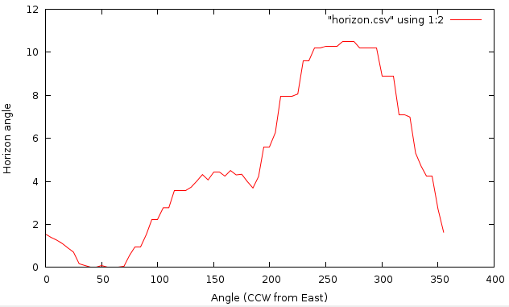

The directions are given as azimuthal angles (in degrees), with the angle starting with 0 towards East and moving counterclockwise (North is 90, etc.). The calculation takes into account the actual projection, so the angles are corrected for direction distortions imposed by it. The directions are thus aligned to those of the geographic projection and not the coordinate system given by the rows and columns of the raster map. This correction implies that the resulting cardinal directions represent true orientation towards the East, North, West and South. The only exception of this feature is LOCATION with x,y coordinate system, where this correction is not applied.
Using the -c flag, the azimuthal angles will be printed in compass orientation (North=0, clockwise).
The elevation parameter is an input elevation raster map. If the buffer options are used (see below), this raster should extend over the area that accommodate the presently defined region plus defined buffer zones.
The step parameter gives the angle step (in degrees) between successive azimuthal directions for the calculation of the horizon. Thus, a value of 5 for the step will give a total of 360/5=72 directions (72 raster maps if used in the raster map mode).
The start parameter gives the angle start (in degrees) for the calculation of the horizon. The default value is 0 (East with North being 90 etc.).
The end parameter gives the angle end (in degrees) for the calculation of the horizon. The end point is omitted! So for example if we run r.horizon with step=10, start=30 and end=70 the raster maps generated by r.horizon will be only for angles: 30, 40, 50, 60. The default value is 360.
The direction parameter gives the initial direction of the first output. This parameter acts as an direction angle offset. For example, if you want to get horizon angles for directions 45 and 225 degrees, the direction should be set to 45 and step to 180. If you only want one single direction, use this parameter to specify desired direction of horizon angle, and set the step size to 0 degrees. Otherwise all angles for a given starting direction with step of step are calculated.
The distance controls the sampling distance step size for the search for horizon along the line of sight. The default value is 1.0 meaning that the step size will be taken from the raster resolution. Setting the value below 1.0 might slightly improve results for directions apart from the cardinal ones, but increasing the processing load of the search algorithm.
The maxdistance value gives a maximum distance to move away from the origin along the line of sight in order to search for the horizon height. The default maxdistance is the full map extent. The smaller this value the faster the calculation but the higher the risk that you may miss a terrain feature that can contribute significantly to the horizon outline. Note that a viewshed can be calculated with r.viewshed.
The coordinate parameter takes a pair of easting-northing values in the current coordinate system and calculates the values of angular height of the horizon around this point. To achieve the consistency of the results, the point coordinate is aligned to the midpoint of the closest elevation raster cell.
If an analyzed point (or raster cell) lies close to the edge of the defined region, the horizon calculation may not be realistic, since it may not see some significant terrain features which could have contributed to the horizon, because these features are outside the region. There are to options how to set the size of the buffer that is used to increase the area of the horizon analysis. The bufferzone parameter allows you to specify the same size of buffer for all cardinal directions and the parameters e_buff, n_buff, s_buff, and w_buff allow you to specify a buffer size individually for each of the four directions. The buffer parameters influence only size of the read elevation map, while the analysis in the raster mode will be done only for the area specified by the current region definition.
The output parameter defines the basename of the output horizon raster maps. The raster name of each horizon direction raster will be constructed as basename_ANGLE, where ANGLE is the angle in degrees with the direction. If you use r.horizon in the single point mode this option will be ignored.
The file parameter allows saving the resulting horizon angles in a comma separated ASCII file (single point mode only). If you use r.horizon in the raster map mode this option will be ignored.
At the moment the elevation and maximum distance must be measured in meters, even if you use geographical coordinates (longitude/latitude). If your projection is based on distance (easting and northing), these too must be in meters. The buffer parameters must be in the same units as the raster coordinates (e.g., for latitude-longitude locations buffers are measured in degree unit).
The output with the -d flag is azimuth degree (-90 to 90, where 0 is parallel with the focal cell).
All horizon values are positive (or zero). While negative values are in theory possible, r.horizon currently does not support them.
g.region raster=elevation -p
r.horizon elevation=elevation direction=215 step=0 bufferzone=200 \
coordinates=638871.6,223384.4 maxdistance=5000
Example 2: determine horizon values starting at 90 deg (North), step size of 5 deg, saving result as CSV file:
r.horizon elevation=elevation direction=90 step=5 bufferzone=200 \
coordinates=638871.6,223384.4 maxdistance=5000 file=horizon.csv
Example 3: test point near highway intersection, saving result as CSV file for plotting the horizon around the highway intersection:
g.region n=223540 s=220820 w=634650 e=638780 res=10 -p
r.horizon elevation=elevation direction=0 step=5 bufferzone=200 \
coordinates=636483.54,222176.25 maxdistance=5000 -d file=horizon.csv

Horizon angles for test point (CCW from East)
We can plot horizon in polar coordinates using Matplotlib in Python:
import numpy as np
import matplotlib.pyplot as plt
horizon = np.genfromtxt('horizon.csv', delimiter=',')
horizon = horizon[1:, :]
ax = plt.subplot(111, polar=True)
bars = ax.plot(horizon[:, 0] / 180 * np.pi,
(90 - horizon[:, 1]) / 180 * np.pi)
# uncomment the 2 following lines when using -c flag
# ax.set_theta_direction(-1)
# ax.set_theta_zero_location('N')
plt.show()
g.region raster=elevation -p
# we put a bufferzone of 10% of maxdistance around the study area
# compute only direction between 90 and 270 degrees
r.horizon elevation=elevation step=30 start=90 end=300 \
bufferzone=200 output=horangle maxdistance=5000
Hofierka J., 1997. Direct solar radiation modelling within an open GIS environment. Proceedings of JEC-GI'97 conference in Vienna, Austria, IOS Press Amsterdam, 575-584
Hofierka J., Huld T., Cebecauer T., Suri M., 2007. Open Source Solar Radiation Tools for Environmental and Renewable Energy Applications, International Symposium on Environmental Software Systems, Prague, 2007
Neteler M., Mitasova H., 2004. Open Source GIS: A GRASS GIS Approach, Springer, New York. ISBN: 1-4020-8064-6, 2nd Edition 2004 (reprinted 2005), 424 pages
Project PVGIS, European Commission, DG Joint Research Centre 2001-2007
Suri M., Hofierka J., 2004. A New GIS-based Solar Radiation Model and Its Application for Photovoltaic Assessments. Transactions in GIS, 8(2), 175-190
Tomas Cebecauer, Joint Research Centre
of the European Commission, Ispra, Italy
Jaroslav Hofierka, GeoModel s.r.o.,
Bratislava, Slovakia
Marcel Suri, Joint Research Centre of the
European Commission, Ispra, Italy
© 2007, Thomas Huld, Tomas Cebecauer, Jaroslav Hofierka, Marcel Suri Thomas.Huld@jrc.it Tomas.Cebecauer@jrc.it hofierka@geomodel.sk Marcel.Suri@jrc.it